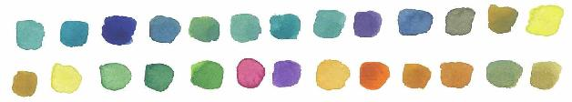

[1][美]阿米尔·艾克塞尔.神秘的阿列夫[M].左平，译.上海：上海科学技术文献出版社，2008.
[2]李文林.文明之光——图说数学史[M].济南：山东教育出版社，2005.
[3][美]迈克尔·J.布拉德利.数学的奠基1800-1900[M].杨延廷，译.上海：上海科学技术文献出版社，2006.
[4][意]伽利略.关于两门新科学的对话[M].武际可，译.北京：北京大学出版社，2006.
[5][美]Kenneth H.Rosen.离散数学及其应用[M].袁崇义，屈婉玲，张桂芸，等译.北京：机械工业出版社，2007.
[6][美]John A.Dossey, Albert D.octo, Lawrence E.Spence，等.离散数学[M].章炯明，王新伟，曹立，译.北京：机械工业出版社，2007.
[7]洪帆.离散数学基础[M].武汉：华中科技大学出版社，2008.
[8][美]詹姆斯·格雷克.信息简史[M].高博，译.北京：人民邮电出版社，2013.
[9]吴鹤龄，崔林.图灵和ACM图灵奖[M].北京：高等教育出版社，2012.
[10]戴牧民，陈海燕.公理集合论导引[M].北京：科学出版社，2011.
